Digital Editing of Photocopier & Scanner Images
Workshop Overview
Create Text on Path Effects
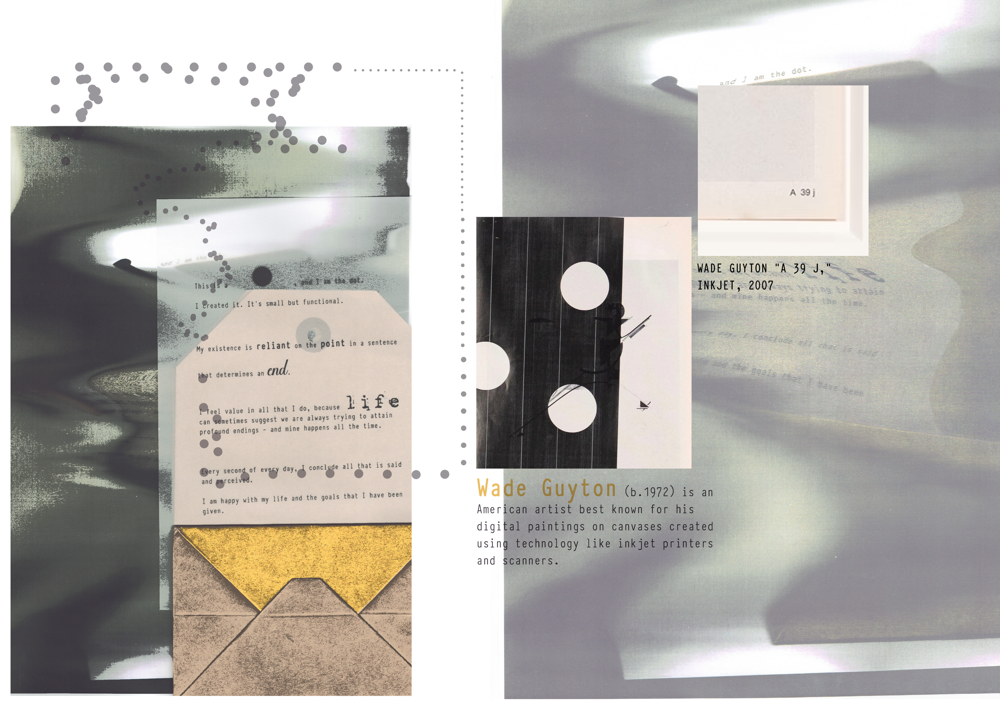
Example of photocopier digital editing with text on path effects
In This Workshop You Will Learn:
- How to create high-contrast effects with Threshold
- Converting selections to paths for adding text
- Adding text that follows image contours
- Creating compositions inspired by artists
- Properly citing artists in your work
⚠️ HOMEWORK: Make 2-3 Experiments Before Class
- Use a photocopier with your Term 2 project images
- OR use a scanner with objects or materials
Photocopier Ideas:
- Move images during copying (blur)
- Keep lid open for light effects
- Put materials on top of your image
- Make copies of copies (2-3 times)
Scanner Ideas:
- Place objects directly on scanner
- Try different materials (fabric, mesh)
- Layer transparent items
- Arrange objects in interesting ways
Scanner Example
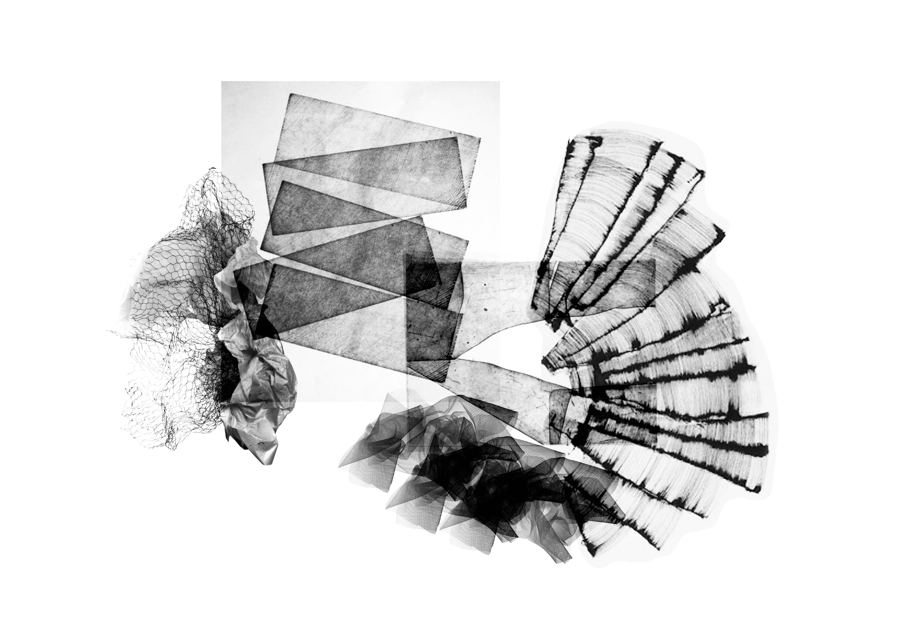
Why try scanning?
- Easy if you can't access a photocopier
- Creates interesting textures and patterns
- Works with everyday objects
- Perfect for unique abstract designs
This student example shows interesting textures created by directly scanning materials.
📹 Video Tutorial: Making Photocopier or Scanner Experiments
Watch this tutorial before class:
Key Points:
- Watch before class
- Try these techniques with your own images or objects
- Bring your experiments to class
- We'll add text to these images in class
In this class, you will learn how to edit your photocopier or scanner experiments using Photoshop. You'll add text that follows the shapes in your images.
- Threshold: Makes image pure black and white (no gray)
- Path: A line that text can follow
- Text on Path: Text that follows a shape or line
- Photocopier Art: Using a copier to make creative images
- Scanner Art: Using a scanner to capture objects directly
Artist Examples
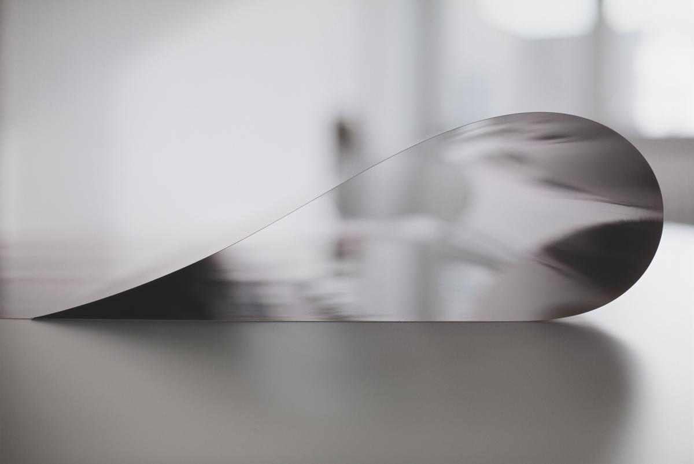
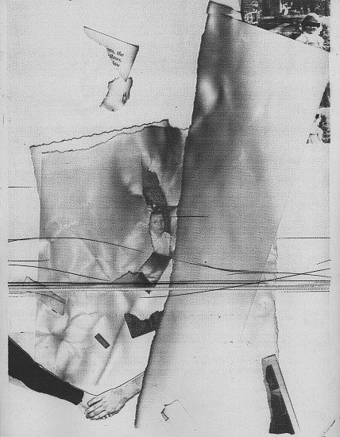
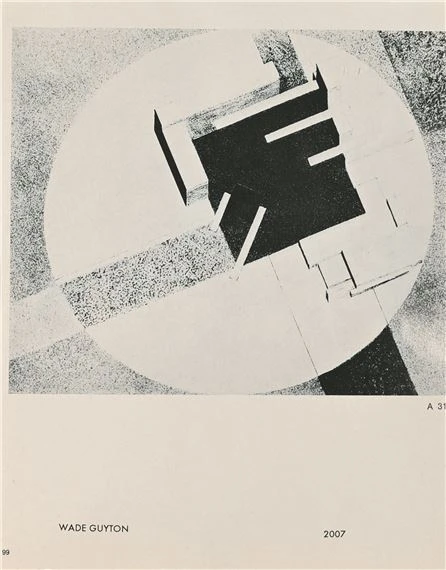

Class Activity (2.5 hours)
In today's class, you'll work with your photocopier or scanner experiments:
1. Setup (15 mins)
- Create new A3 document
- Import your experiments
- Name your layers
2. Make High Contrast (45 mins)
- Use Threshold adjustment
- Select interesting areas
- Convert selections to paths
- Save your paths
3. Add Text (45 mins)
- Add text along your paths
- Try different fonts
- Add quotes and references
- Try different text colors
4. Finish Design (30 mins)
- Try different blend modes
- Adjust opacity
- Add filters if you want
- Position text correctly
Photoshop Tutorial: Step by Step
Interactive Photoshop Guide
1 Prepare Your Image
First, let's set up your document and import your experiment:
- Create a new document (File → New)
- Set size to A3, and resolution to 300dpi
- Import your photocopier or scanner experiment
- Duplicate your layer (Ctrl/Cmd+J)
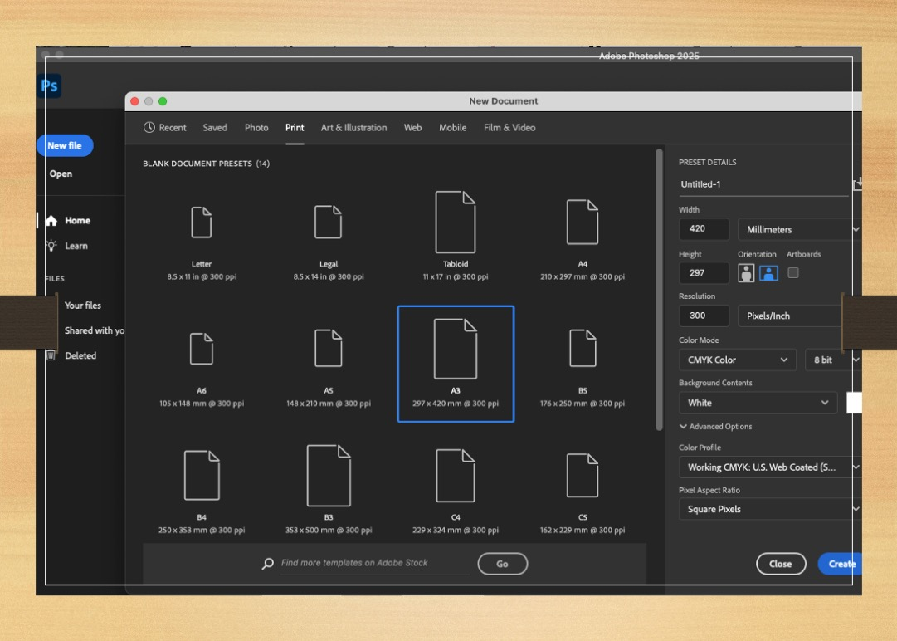
2 Make Black & White
Next, let's create high-contrast black and white using Threshold:
- Select your duplicated layer in the Layers panel
- Go to Image → Adjustments → Threshold
- Move the slider to adjust the black/white balance
- Click OK when you're happy with the result
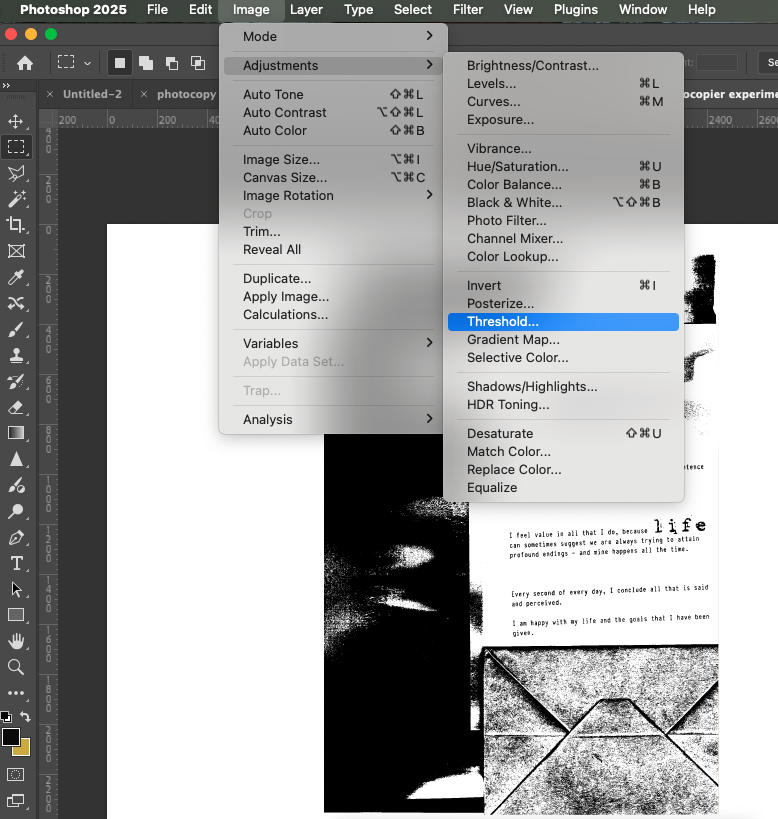
3 Make Selections
Now select interesting areas in your image:
- Select the Magic Wand tool (W)
- Click on black areas or white areas you want to use
- Hold Shift to add more areas
- Experiment with selecting different shapes
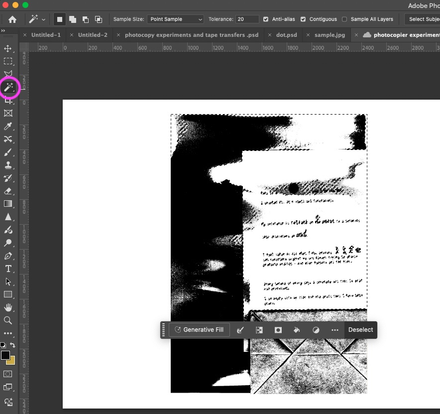
4 Convert to Paths
Convert your selections to paths that text can follow:
- With your selection active, right-click
- Choose Make Work Path from the menu
- Set Tolerance to 1.0 pixels for smooth paths
- Click OK
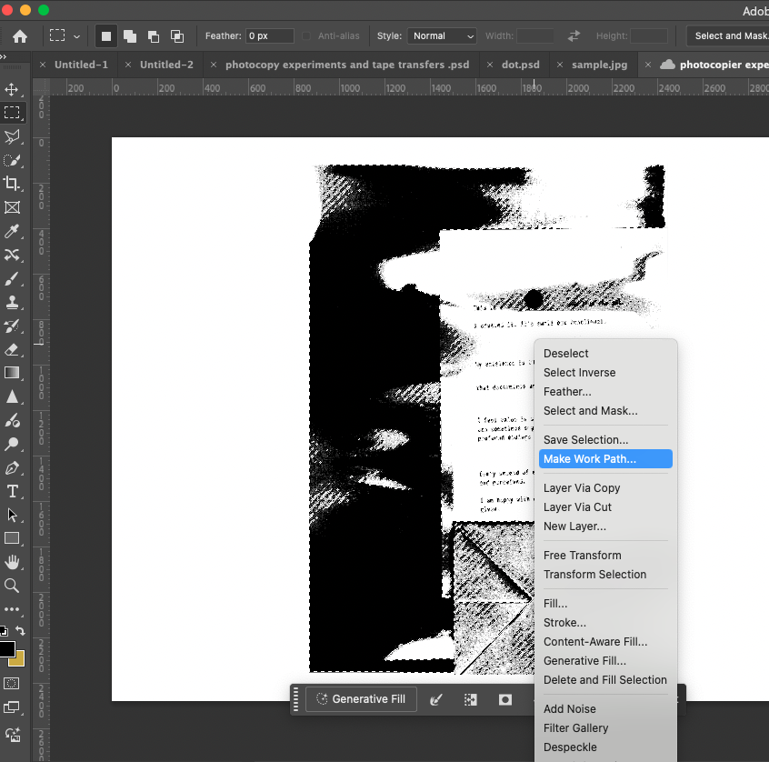
5 Add Text on Path
Now let's add text that follows your path:
- Select the Type tool (T)
- Move your cursor near the path until it changes to a curved text icon
- Click on the path to position your text
- Type your text - it will follow the path!
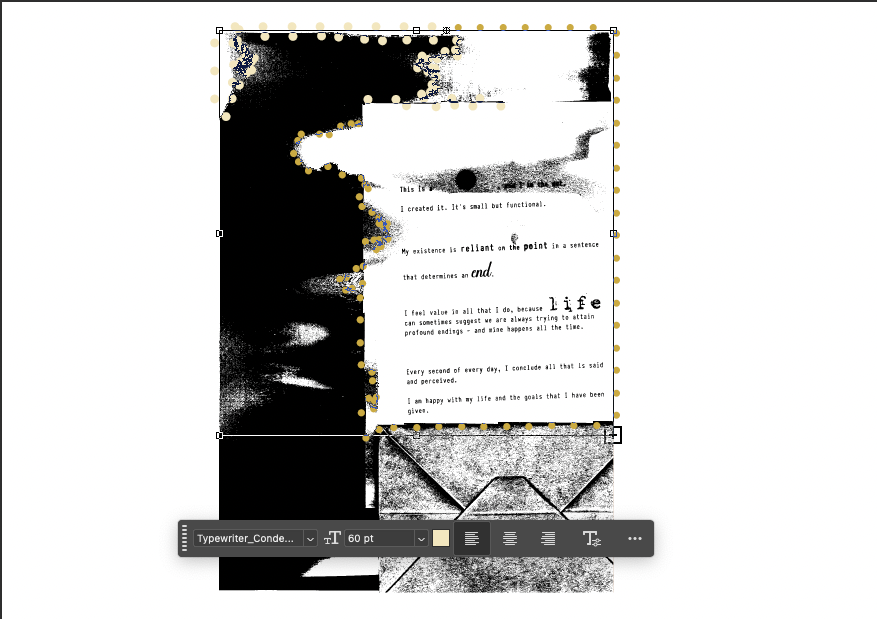
6 Try Different Fonts
Experiment with different fonts for your text:
- Select your text layer
- Use the Options bar at the top to change the font
- Try different sizes and colors
- Some fonts work better than others on paths
7 Try Blend Modes
Make your text blend with your image:
- Select your text layer in the Layers panel
- Try different blend modes from the dropdown menu
- Adjust the opacity slider if needed
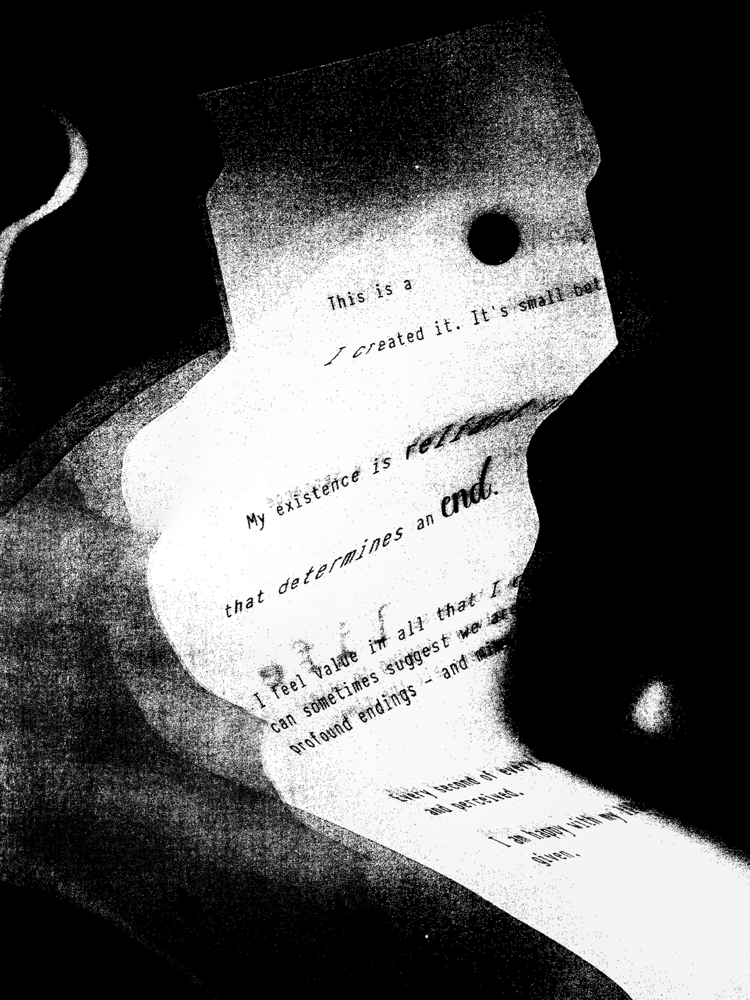
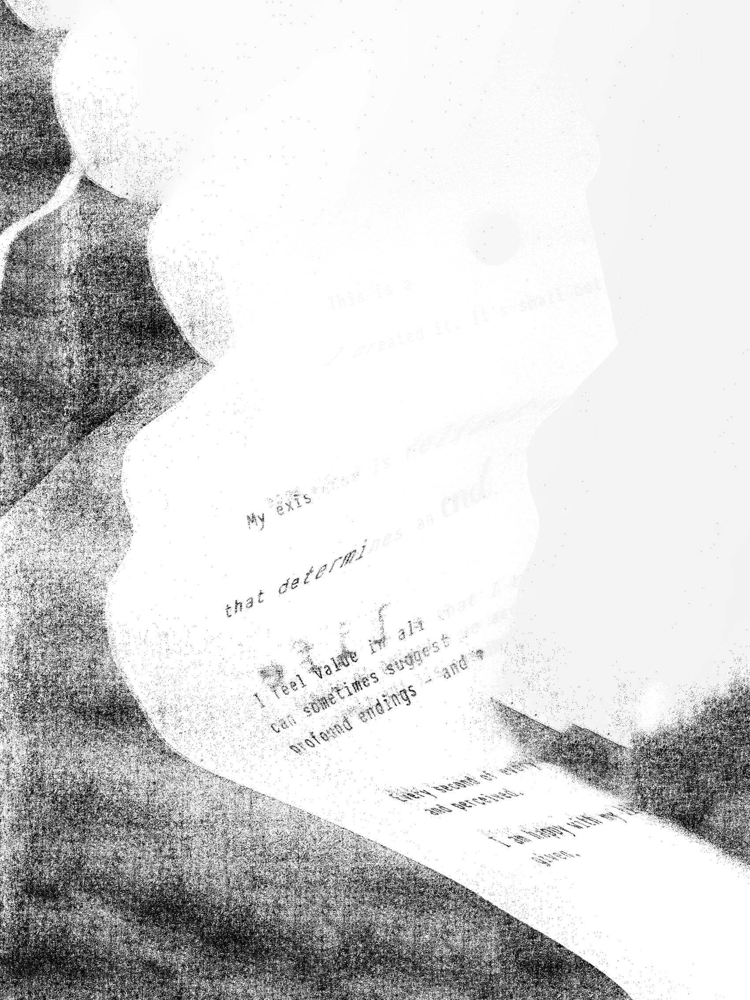
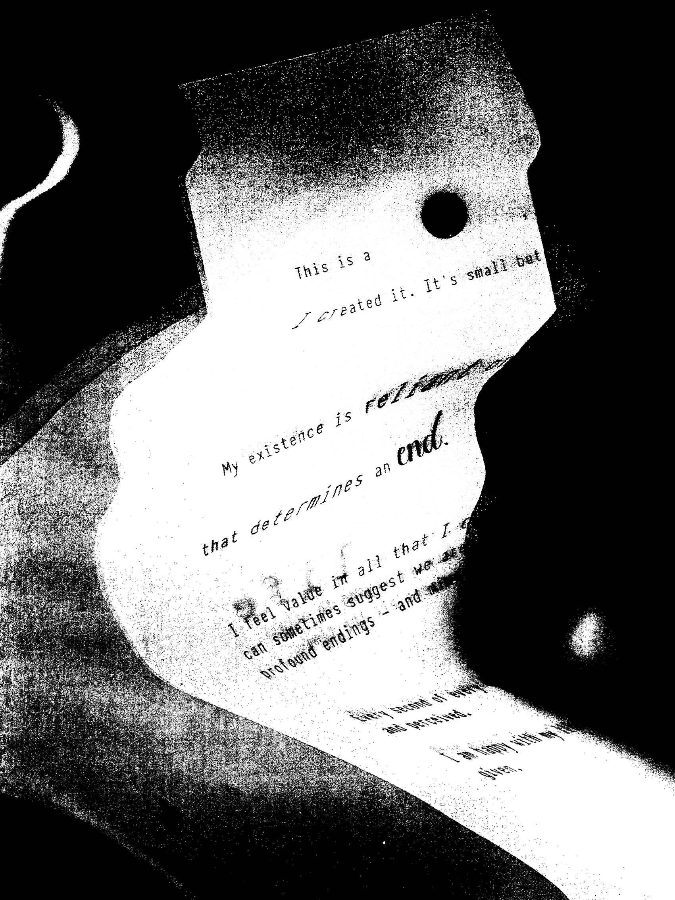
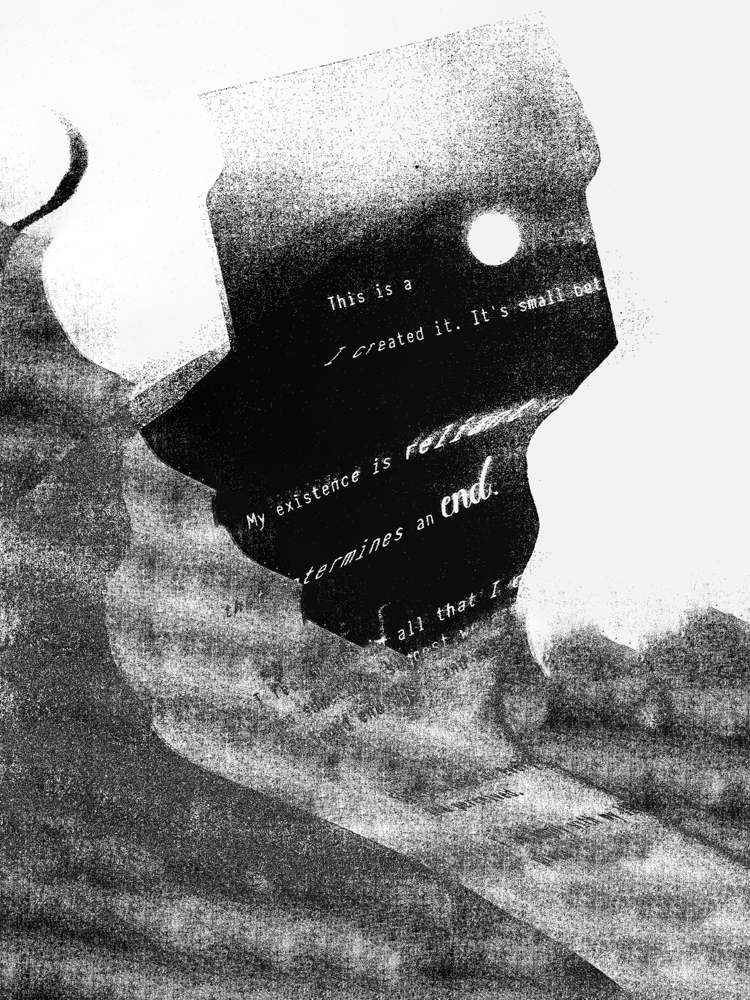
- Multiply: Good for white backgrounds
- Screen: Good for dark backgrounds
- Overlay: Creates high contrast
8 Add Artist Quotes & References
Add artist quotes and proper citations to your work:
- Create more text paths in different areas
- Add artist quotes in italic with quotation marks
- Include the artist name
- Add Harvard references at the bottom
"I became interested in the idea that you could send image information over telephone lines..."
— William Larson (1978)
Larson, W. (1978) Fireflies [Teleprinter prints]. MoMA, New York.
Student Example
Student Example
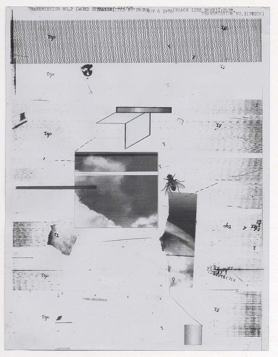
Student work showing photocopier experiments with text
Artist Quote Example
"Larson used a Graphic Sciences DEX 1 Teleprinter, a sophisticated early fax machine, which converted pictures, text and sound into digitally-generated audio signals."
— William Larson, on his Fireflies series (1969-78)
Harvard Reference Example
Larson, W. (1978) Fireflies [Teleprinter prints]. The Museum of Modern Art, New York.
Text on Path Tutorial
Text on Path Tutorial
Finishing & Uploading to Padlet
Before Uploading Your Work:
 Check connection to Term 2 project
Check connection to Term 2 project
 Add all references
Add all references
 Save PSD with layers
Save PSD with layers
 Export as JPG
Export as JPG
Uploading to Padlet
Upload two items:
1. Original Experiments
Upload your photocopier or scanner experiments:
- Include at least 2 different techniques
- Write what you did
- Explain how they relate to your project
2. Final Design
Upload your edited work:
- Show threshold effect
- Include text on path
- Add artist reference
- Connect to your Term 2 project